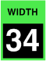

WAVESHAPER width
These control the basic pulse or FM width of each waveshaper before modulation. The values are shown as percentages if the “saws” or “pulse” shape is selected, or as a number of cycles of phase modulation if any of the FM shapes are selected. (This has no effect for the noise or impulse shapes.)
Toolkit
These are contained in the Waveshaper shape cluster within the Waveshaper section.
Chroma panel
These are contained in the WIDTH section of the right panel, under the following parameter number:
|  |
These appear in the display as Wave Width.
MIDI
These are accessed via the following NRPNs:
| A | 1,49 | |
| B | 2,49 |
Values
The values are displayed as percentages or cycles:
| MIDI | percent | cycles | ||
| 0 | 0% | 0cyc | (default) | |
| • • • |
• • • |
• • • |
||
| 64 | 50% | 8cyc | (significant) | |
| • • • |
• • • |
• • • |
||
| 127 | 100% | 16cyc |